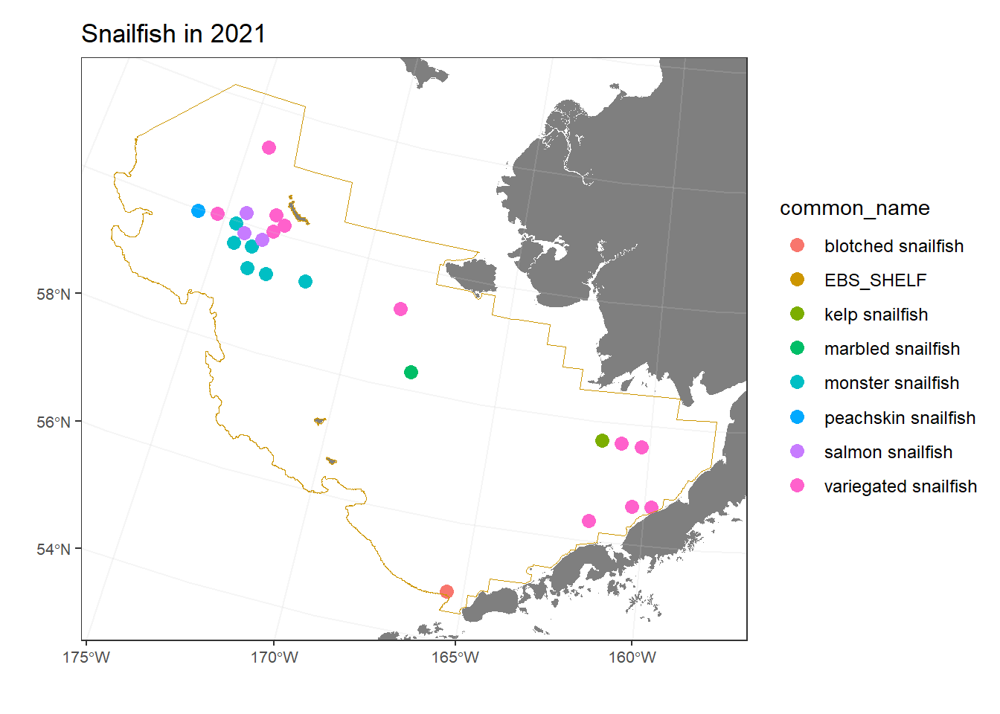
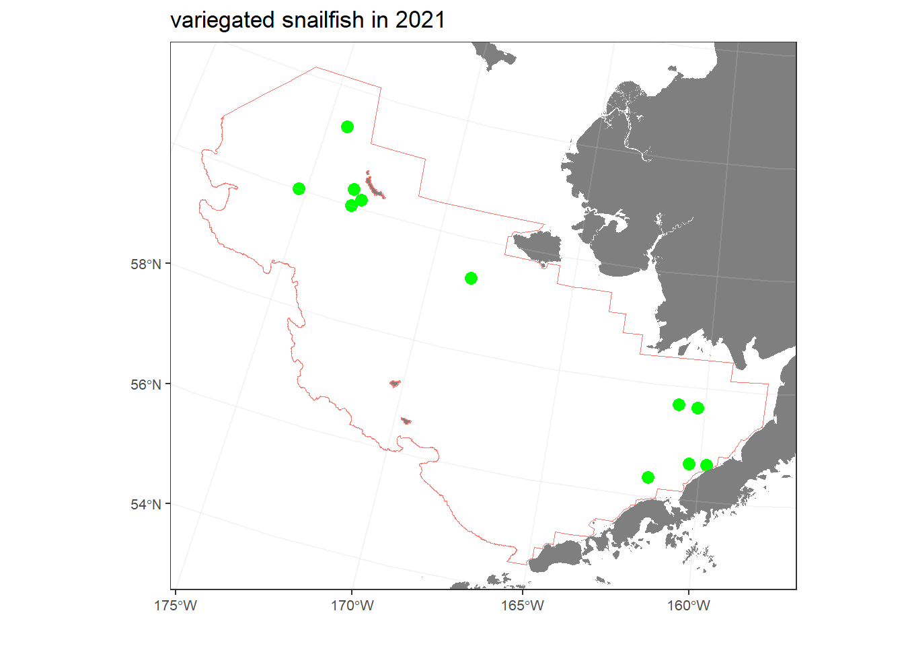
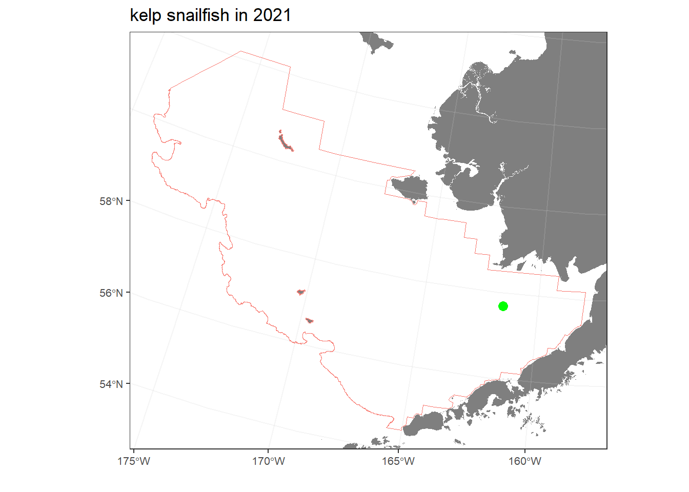
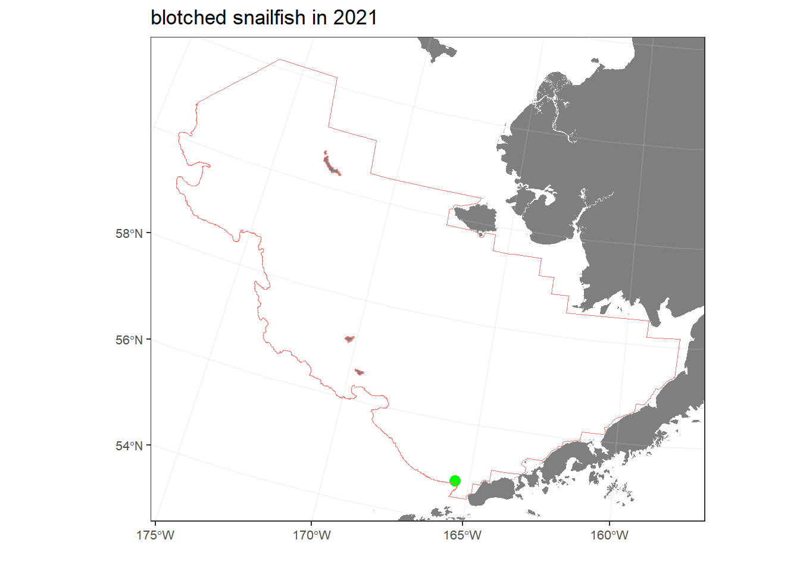
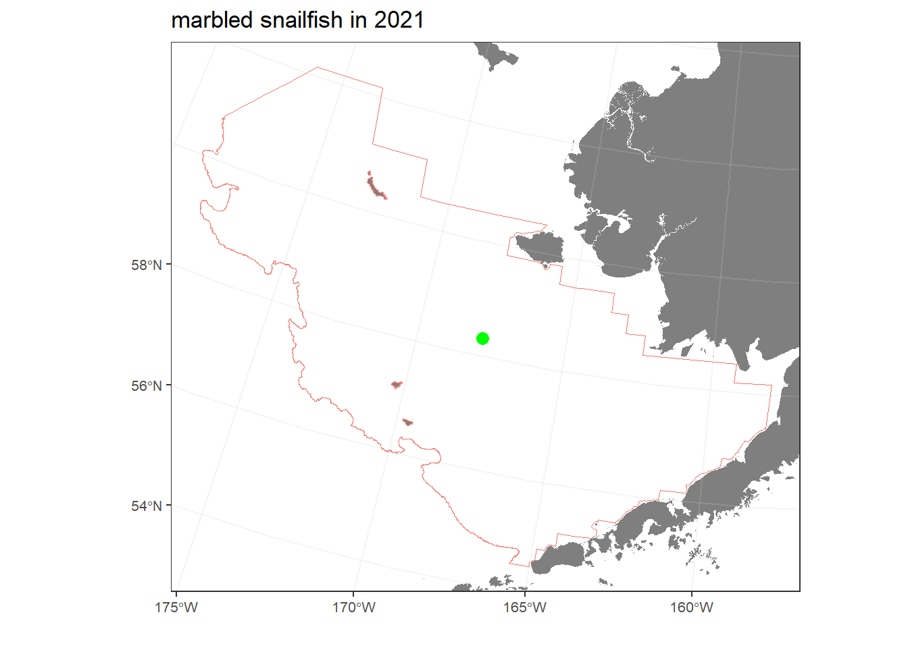
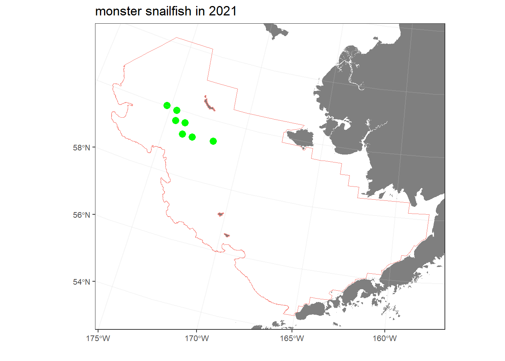
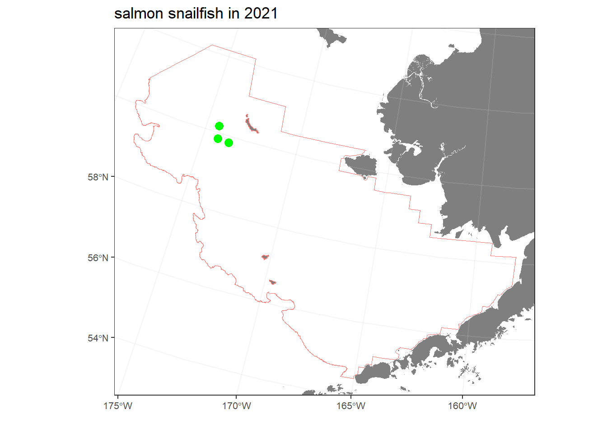
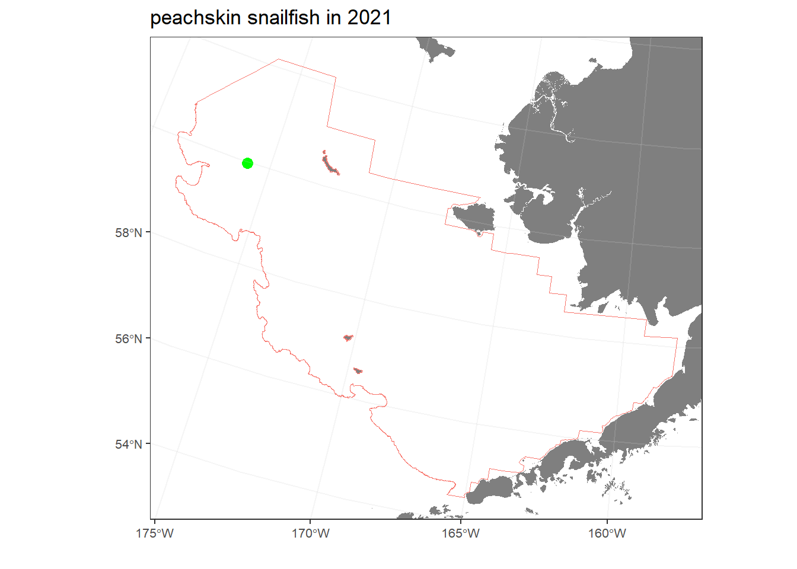

Snailfish found in the Eastern Bering Sea in 2021
DRAFT: March 27, 2023
This report compares the distribution and relative abundance of 7 snailfish species (specifically, variegated snailfish, kelp snailfish, blotched snailfish, marbled snailfish, monster snailfish, salmon snailfish, peachskin snailfish; Figure 1) with maps from the 2021 in the eastern Bering sea shelf bottom trawl survey. Survey results reported herein include estimates of catch-per-unit-effort for most snailfishes and geographic distributions (Figure 2); Markowitz, Dawson, Charriere, Prohaska, Rohan, Stevenson, et al. (2022b); Markowitz, Dawson, Charriere, Prohaska, Rohan, Haehn, et al. (2022); Markowitz, Dawson, Charriere, Prohaska, Rohan, Stevenson, et al. (2022a); Markowitz et al. (In review)). Data is publicly available from the Fisheries One Stop Shop (NOAA Fisheries Alaska Fisheries Science Center, 2023).


variegated snailfish (Liparis gibbus)
The geographic distribution of variegated snailfish (Figure 3), and the raw data that went into that map (Table 1).

| stratum | station | vessel_name | date_time | cpue_kgkm2 | cpue_nokm2 | weight_kg | count | bottom_temperature_c | surface_temperature_c | depth_m |
|---|---|---|---|---|---|---|---|---|---|---|
| 31 | F-13 | Alaska Knight | 06/01/2021 07:14:05 | 0.68 | 38.95 | 0.04 | 2 | 4.1 | 5.8 | 61 |
| 31 | I-13 | Alaska Knight | 06/02/2021 12:05:29 | 0.40 | 41.90 | 0.02 | 2 | 4.4 | 4.7 | 55 |
| 10 | F-14 | Vesteraalen | 05/31/2021 07:07:47 | 0.61 | 24.43 | 0.03 | 1 | 5.3 | 5.2 | 37 |
| 31 | I-12 | Alaska Knight | 06/03/2021 09:31:52 | 0.57 | 40.37 | 0.03 | 2 | 4.3 | 6.0 | 57 |
| 10 | E-11 | Alaska Knight | 06/04/2021 11:46:56 | 0.47 | 40.99 | 0.02 | 2 | 4.3 | 6.7 | 64 |
| 20 | N-18 | Alaska Knight | 06/23/2021 12:22:47 | 0.05 | 25.04 | 0.00 | 1 | 3.9 | 6.4 | 42 |
| 43 | QP2524 | Alaska Knight | 07/03/2021 11:42:29 | 0.10 | 19.50 | 0.00 | 1 | 2.5 | 7.9 | 60 |
| 43 | Q-25 | Alaska Knight | 07/03/2021 13:50:06 | 0.22 | 36.59 | 0.01 | 1 | 2.9 | 7.2 | 63 |
| 43 | P-25 | Alaska Knight | 07/03/2021 16:03:03 | 41.74 | 56.23 | 2.23 | 3 | 1.9 | 7.8 | 75 |
| 82 | T-26 | Alaska Knight | 07/05/2021 15:04:13 | 19.51 | 20.53 | 0.95 | 1 | 0.5 | 7.9 | 79 |
| 61 | P-28 | Vesteraalen | 07/17/2021 10:45:11 | 30.40 | 21.23 | 1.43 | 1 | 2.3 | 9.2 | 117 |
kelp snailfish (Liparis tunicatus)
The geographic distribution of kelp snailfish (Figure 4), and the raw data that went into that map (Table 2).

| stratum | station | vessel_name | date_time | cpue_kgkm2 | cpue_nokm2 | weight_kg | count | bottom_temperature_c | surface_temperature_c | depth_m |
|---|---|---|---|---|---|---|---|---|---|---|
| 10 | I-11 | Vesteraalen | 06/03/2021 13:11:46 | 0.62 | 45.92 | 0.03 | 2 | 4.1 | 5.7 | 53 |
blotched snailfish (Crystallichthys cyclospilus)
The geographic distribution of blotched snailfish (Figure 5), and the raw data that went into that map (Table 3).

| stratum | station | vessel_name | date_time | cpue_kgkm2 | cpue_nokm2 | weight_kg | count | bottom_temperature_c | surface_temperature_c | depth_m |
|---|---|---|---|---|---|---|---|---|---|---|
| 50 | AZ0504 | Alaska Knight | 06/10/2021 09:31:41 | 4.5 | 39.12 | 0.23 | 2 | 4 | 6.1 | 157 |
marbled snailfish (Liparis dennyi)
The geographic distribution of marbled snailfish (Figure 6), and the raw data that went into that map (Table 4).

| stratum | station | vessel_name | date_time | cpue_kgkm2 | cpue_nokm2 | weight_kg | count | bottom_temperature_c | surface_temperature_c | depth_m |
|---|---|---|---|---|---|---|---|---|---|---|
| 41 | K-01 | Vesteraalen | 06/21/2021 12:24:31 | 0.48 | 65.63 | 0.02 | 3 | 3.2 | 7.8 | 60 |
monster snailfish (Careproctus phasma)
The geographic distribution of monster snailfish (Figure 7), and the raw data that went into that map (Table 5).

| stratum | station | vessel_name | date_time | cpue_kgkm2 | cpue_nokm2 | weight_kg | count | bottom_temperature_c | surface_temperature_c | depth_m |
|---|---|---|---|---|---|---|---|---|---|---|
| 62 | O-26 | Alaska Knight | 07/07/2021 09:05:45 | 0.93 | 41.33 | 0.04 | 2 | 2.1 | 8.9 | 104 |
| 43 | N-23 | Vesteraalen | 07/06/2021 07:06:31 | 0.24 | 19.77 | 0.01 | 1 | 2.4 | 8.4 | 80 |
| 62 | P-27 | Vesteraalen | 07/15/2021 15:50:40 | 0.40 | 19.92 | 0.02 | 1 | 2.1 | 9.6 | 109 |
| 62 | N-26 | Vesteraalen | 07/15/2021 07:27:15 | 0.63 | 39.10 | 0.03 | 2 | 2.6 | 9.8 | 111 |
| 62 | O-27 | Vesteraalen | 07/15/2021 13:09:54 | 0.19 | 19.34 | 0.01 | 1 | 2.5 | 9.6 | 115 |
| 43 | N-25 | Vesteraalen | 07/14/2021 18:50:38 | 2.24 | 117.70 | 0.11 | 6 | 2.3 | 9.9 | 100 |
| 61 | P-28 | Vesteraalen | 07/17/2021 10:45:11 | 0.32 | 21.23 | 0.01 | 1 | 2.3 | 9.2 | 117 |
salmon snailfish (Careproctus rastrinus)
The geographic distribution of salmon snailfish (Figure 8), and the raw data that went into that map (Table 6).

| stratum | station | vessel_name | date_time | cpue_kgkm2 | cpue_nokm2 | weight_kg | count | bottom_temperature_c | surface_temperature_c | depth_m |
|---|---|---|---|---|---|---|---|---|---|---|
| 43 | PO2625 | Alaska Knight | 07/07/2021 07:08:12 | 25.60 | 100.01 | 1.28 | 5 | 2.0 | 9.0 | 95 |
| 43 | QP2726 | Alaska Knight | 07/06/2021 11:33:06 | 5.66 | 20.96 | 0.27 | 1 | 1.9 | 8.5 | 99 |
| 62 | PO2726 | Alaska Knight | 07/06/2021 15:35:54 | 0.64 | 21.26 | 0.03 | 1 | 2.1 | 8.7 | 106 |
peachskin snailfish (Careproctus scottae)
The geographic distribution of peachskin snailfish (Figure 9), and the raw data that went into that map (Table 7).

| stratum | station | vessel_name | date_time | cpue_kgkm2 | cpue_nokm2 | weight_kg | count | bottom_temperature_c | surface_temperature_c | depth_m |
|---|---|---|---|---|---|---|---|---|---|---|
| 61 | P-29 | Vesteraalen | 07/18/2021 16:15:12 | 5.44 | 18.77 | 0.29 | 1 | 2.5 | 9.3 | 130 |